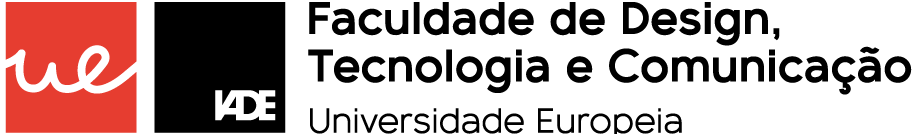

Juntos chegamos onde queremos


Juntos chegamos onde queremos
Queres uma boleia?
Faz login ou regista-te no IADEboleias. Só tens de dizer onde estás e para onde vais e quando queres ir
Não queres ir sozinho?
Com o IADEboleias terás sempre um companheiro de viagem. Só tens de escolher com queres ir
Novas experiências
Uma nova forma de te deslocares e de conheceres colegas e professores
A mobilidade partilhada
É um sistema de partilha de um veículo individual, de propriedade de um dos utilizadores, por mais do que um passageiro, para percorrer o mesmo percurso
Ajuda a descarbonizar as cidades
Ao contribuires para diminuir o tráfego nas grandes cidades fomentando a utilização dos transportes coletivos e a partilha dos automóveis, consequentemente contribuis para a redução dos impactes ambientais
Rentabilizar
Esta é também uma forma de rentabilizares as tuas deslocações dividindo as despesas com os teus companheiros de viagem.
Como Funciona
Condições de utilização
Sobre nós
FAQ